2008/04/03 アクセルワイヤーの交換
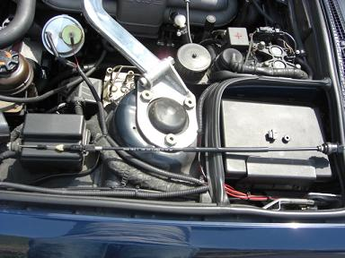 用意したのは、 ACCELERATOR BOWDEN CABLE(P/N:35411155958) RUBBER GROMMET(P/N:35411152331) BEARING ACCELATOR BOWDEN CABLE(P/N:13541747519) です。
|
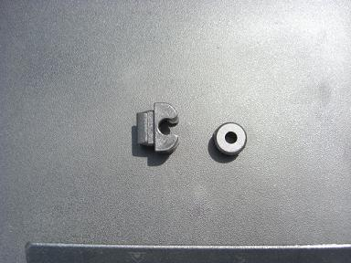 右がRUBBER GROMMET・・・ペダル側のワイヤー固定に使う。 左がBEARING ACCELATOR BOWDEN CABLE・・・・エンジン側のワイヤー固定に使う。
|
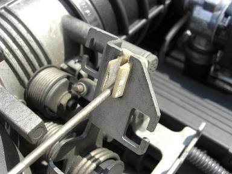 アクセルワイヤーを固定しているグロメットですが、、 このプラスチック、見た感じで「触るなキケン」オーラが・・・＾＾；
|
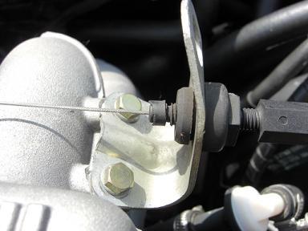 はめ込まれているこのゴムにも亀裂が入ってるし、、 ワイヤーが自体が伸びてしまい、遊びを調整する余裕が無くなっています。。
|
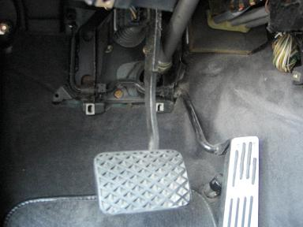 まずは、運転席足元の内装を外します。 ネジ4本とプラスチック部品2個を外すとこの状態に。 |
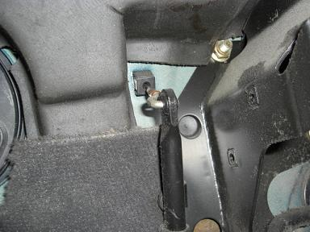 アクセルペダルから出ているロッドを辿っていくと RUBBER GROMMETを介してアクセルワイヤーと繋がっています＾＾
|
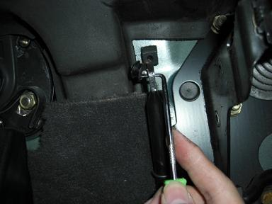 このRUBBER GROMMETを適当な工具で外します。 ゴムなので簡単に外すことができる＾＾
|
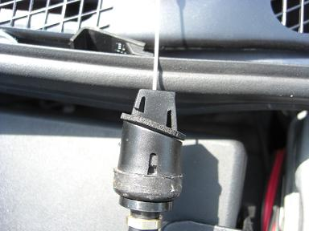 ワイヤー本体の固定部分は、このような構造をしています。 |
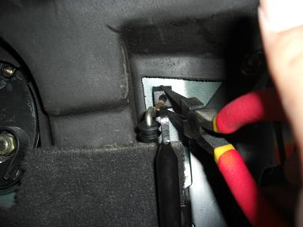 なので、ラジオペンチで挟みながら押すと外れる |
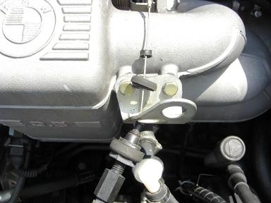 古いワイヤーに少し力を加えると、３分割してしまいました（´。` ） やはり劣化していたようです。
|
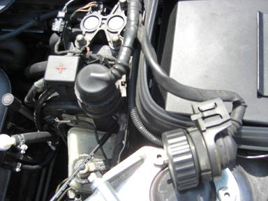 このアクセルワイヤー、マスターバックと配線類の間を通っていて作業しにくいので、 こんな感じで丸いのを外しておきます。 ツメで固定されているだけなので簡単に外せる＾＾
|
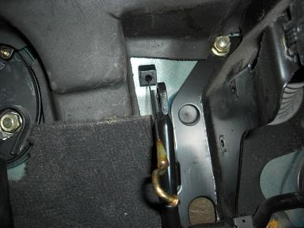 その隙間から、ワイヤーを通す四角い穴が見える。そこを目掛けて通します。 通すのは簡単です＾＾ でも、ツメで固定するのがなかなか難しい。。 穴は「□」なのにケーブルのツメが「◇」になってしまって上手くはまらない＾＾； ２人いれば、上と下から作業できるので簡単だと思う。
|
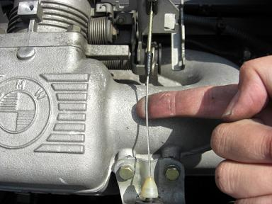 BEARING ACCELATOR BOWDEN CABLEを使い エンジン側のケーブルを元に戻し、終了。 装着後は、ワイヤーを軽く持ち上げて「カチッ」と音がする 絶妙な張りになるように調整。 この時、あまり強く張りすぎないようにする。 |
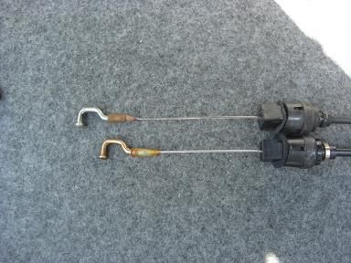 上が古いので下が新品 こんなに伸びていました。 ワイヤー自体が切れてしまうとゆうよりも、ゴム部分やグロメットがイッて アクセルが踏めなくなってしまいそうだ。。 交換後は、アクセルがかなりスムーズで軽い＾＾ いつものようにアクセルを踏むと車がずっと前へすすむ感じになった。 やっぱりワイヤー自体もだいぶ劣化していたようだ。 部品代、約4800円に対してディーラーでの工賃が4500円との回答でした w(ﾟﾛﾟ;w しかし、アクセルは重要な部分なので自信のない方はプロに作業をお願いして下さい。
|